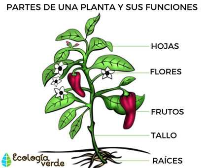

Partes de una planta

Dependiendo del tipo de planta, ésta puede tener unas u otras estructuras. Pero a grandes rasgos, las plantas se componen de:
Raíz.
El órgano fundamental de todo tipo de plantas, que sirve para absorber el agua y los nutrientes del medio en que se encuentran, sea líquido o sólido. Generalmente las raíces no suelen ver la luz, y crecen de forma rizomática, es decir, desordenada. En sus estructuras, además, suelen guardarse nutrientes y sustancias de emergencia.
Tallo.
Los tallos son prolongaciones aéreas de la planta, que crecen en sentido contrario de la raíz y poseen generalmente un sistema de vasos conductores para transportar la savia y los nutrientes hacia los demás órganos, como las hojas. Además, el tallo brinda soporte estructural al organismo, pues de él nacen, en el caso de los árboles (ahí ya no se llamarían tallos sino troncos), las ramas, que no son más que bifurcaciones secundarias del tallo.
Hojas. Órganos de diversa forma (redonda, alargada), color (entre verde y rojo) y textura en los que se realiza la fotosíntesis. Nacen del tallo o en las ramas, y dependiendo de la especie vegetal, pueden secarse y caer ante la llegada del frío (el otoño) para disminuir la pérdida de agua del árbol, o no.
Flores.
Se trata de los órganos reproductivos de las plantas, de los cuales se generan luego los frutos y las semillas. Se componen generalmente de estambres (órganos sexuales masculinos) y pistilos (órganos sexuales femeninos), aunque existen plantas de un único sexo definido. Y plantas, también, nunca florecen, ya que su reproducción ocurre de otra manera. Las flores poseen atractivos olores y colores, cuya función es atraer animales (como las abejas o ciertas aves), para que sirvan de transporte del polen desde una flor a otra, permitiendo así la inseminación y el intercambio genético entre las plantas.
Semillas.
Una vez fecundadas las flores, las plantas producen semillas, que son embriones listos para producir un nuevo individuo. En ocasiones estas semillas se producen sin necesidad de flores y fecundación, todo depende de la especie. Igualmente, algunas semillas vienen recubiertas de carnosidades conocidas como frutos, mientras que otras simplemente caen al medio ambiente, o lo hacen envueltas en distintas formas de protección y transporte.
Frutos.
Recubrimientos carnosos o secos de las semillas de una planta, generalmente nutritivos, garantizándole así al embrión el sustento fértil para su germinación cuando caiga o, por el contrario, ayudándolo a desplazarse lejos de la sombra del progenitor, al ser comidas y luego defecadas por algunos animales.